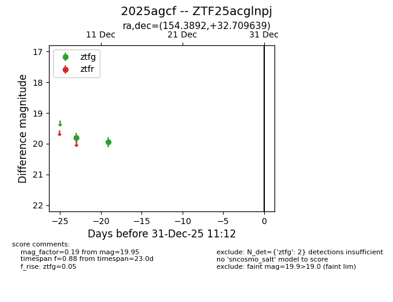
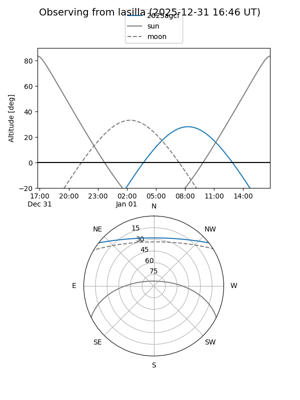
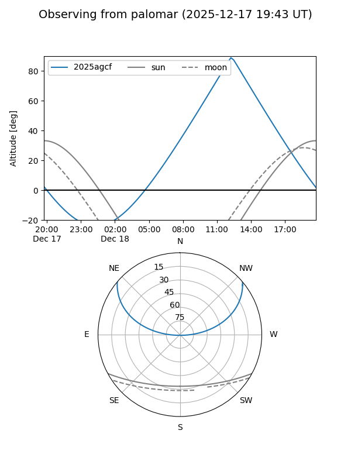

2025agcf
Target 2025agcf at 2025-12-31 18:00
Aliases and brokers:
FINK: link
Lasair: link
ALeRCE: link
TNS: link
YSE: link
alt names
ZTF25acglnpj (ztf,fink_ztf)
2025agcf (tns,yse)
Coordinates:
equatorial (ra, dec) = 154.3892,+32.70964
equatorial (HMS+DMS) = 10:17:33.41,+32:42:34.70
galactic (l, b) = (193.9022,+56.37775)
Flags:
Photometry:
last ztfg=19.95
2 ztfg detections
Lightcurve

Visibility


Additional plots